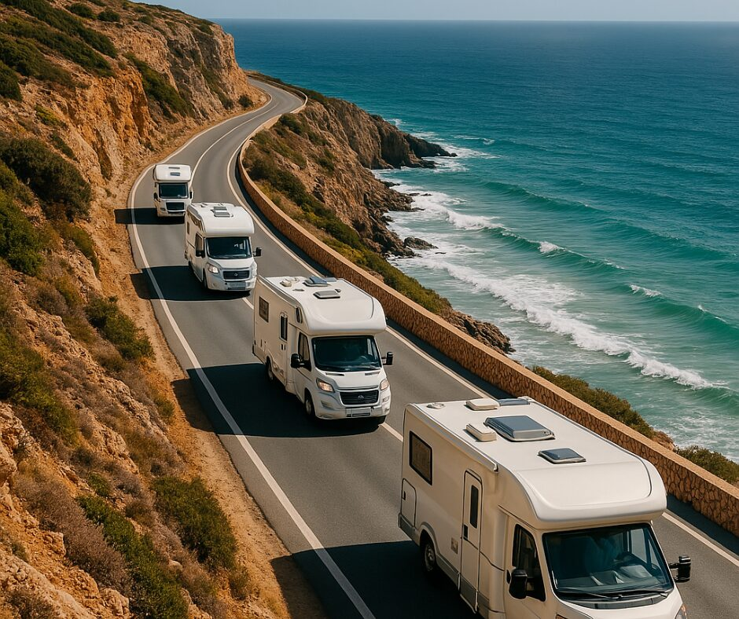
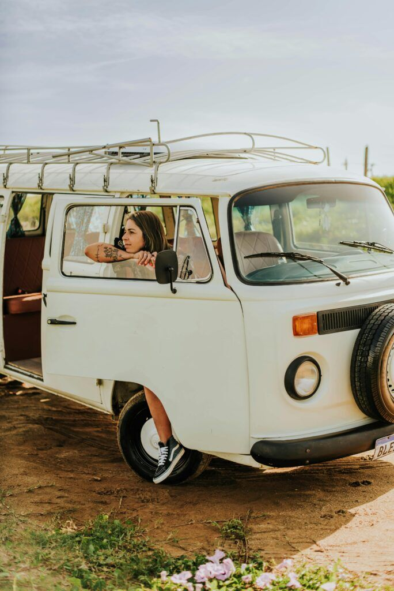
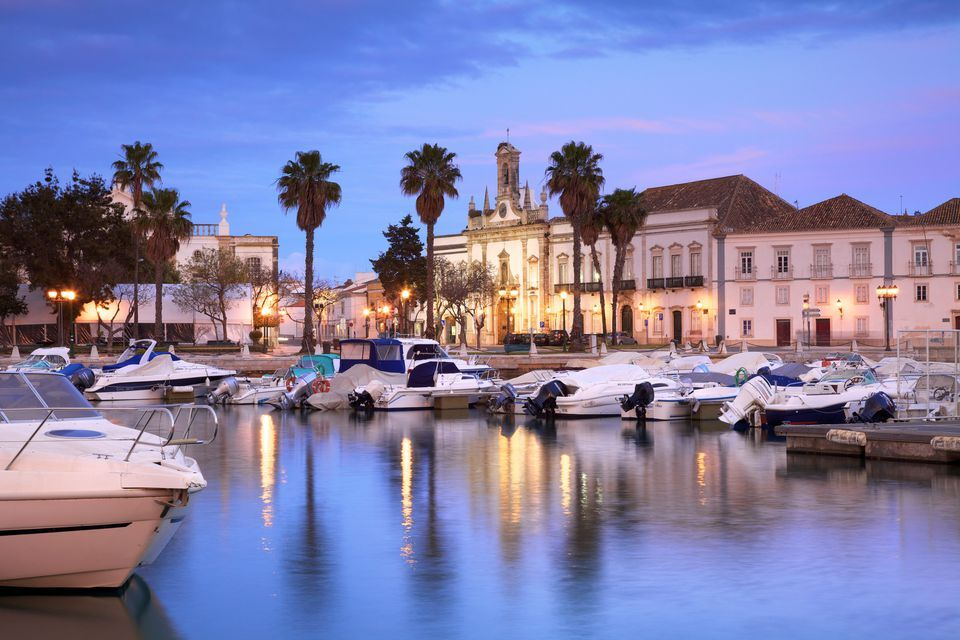
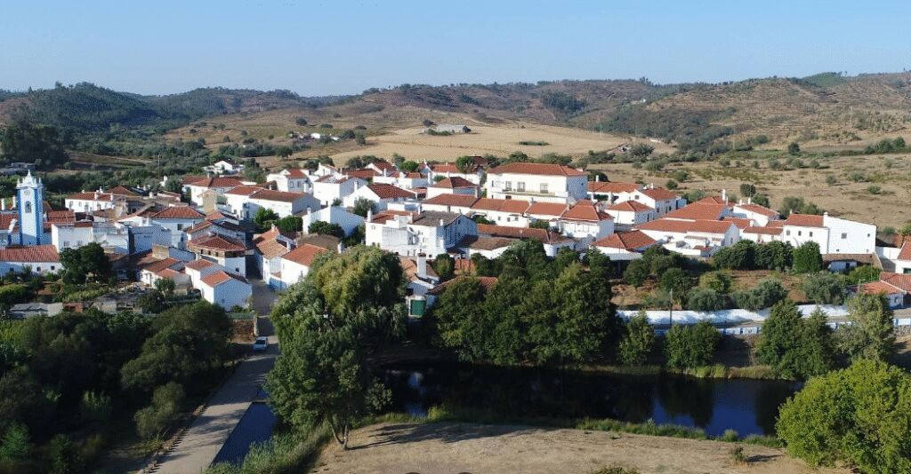
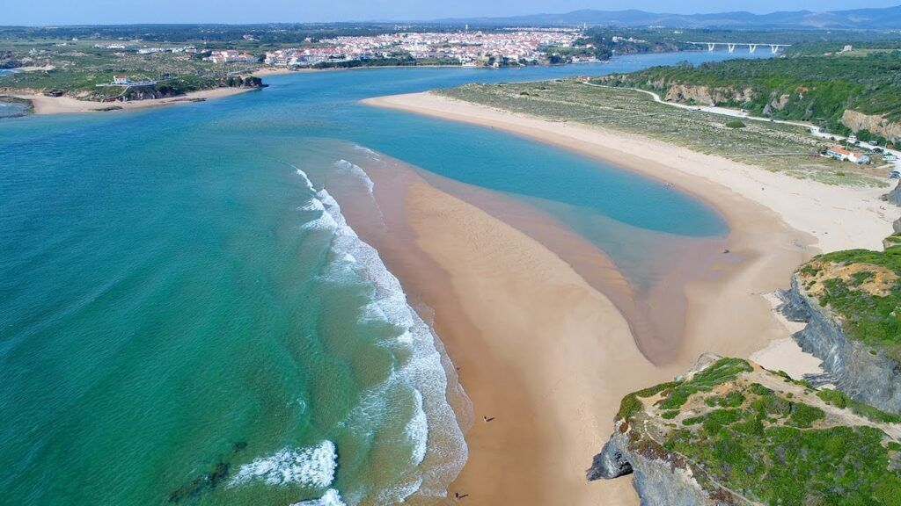
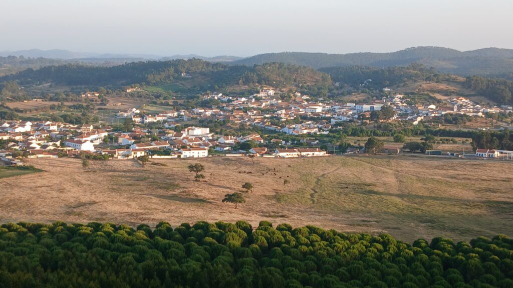

Green on Wheels
Vanlife for environmentally friendly lifestyles.
A journey by campervan through stories about eco friendly lifestyles, Portugal.

Vanlife for environmentally friendly lifestyles.
We took a campervan road trip through the south of Portugal. Four stops, four Human Library events, and one big theme: stories about protecting the environment and living in an eco friendly, minimalist way.

Young people connected to eco friendly lifestyles
People who live with appreciation and concern for nature and the environment, and for whom ecology is a present topic in everyday life.
An invitation to speak up, share, inspire and connect with others through storytelling.
- Aged between 18 and 30
- Fluent English, minimum B2
- Enough stamina for six intense days on the road
- Legal resident in Bulgaria, Greece, the Netherlands, Portugal or Spain
From Faro to the west coast and back
A route across the south of Portugal, from the Algarve shore inland and up the southwest coast.
Faro
A youth hostel in the city centre to get to know each other and prepare for the road, plus the first Human Library as the trip hit the road.

Santa Clara a Velha
From the south coast inland, to a culturally rich village with beautiful landscapes. The first night on the road and the second Human Library.

Odemira
The southwest shore, a visit to an agroecological project and the third event.

São Luís
A lively village where social and ecological projects are growing, and the setting for the final event and a celebration of the journey.

Faro
The project finished where it started, with time to reflect on and celebrate the whole experience.
Everything on the road
Tickets, accommodation and meals were covered by the project. Some restrictions applied. This chapter is completed and applications are closed.
See how the Human Library works